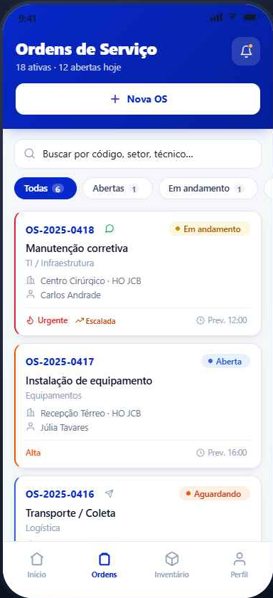
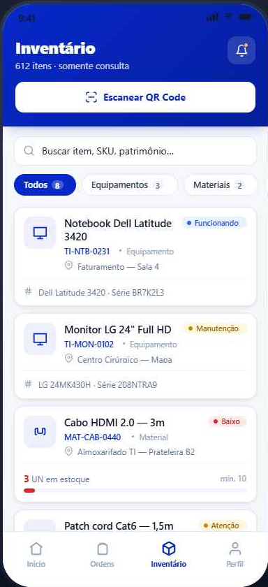

01 / CHAMADOS
Pedidos sem acompanhamento
Solicitação, responsável, fotos, solução, assinatura e comprovante permanecem associados à mesma ordem.
O SDX Operações conecta ordens de serviço, inventário, patrimônio e estoque para que clínicas e hospitais saibam o que aconteceu, onde cada item está e quem participou de cada etapa.


Quando chamados ficam no WhatsApp, equipamentos em planilhas e retiradas sem histórico, cada resposta exige investigação. O SDX Operações transforma esses pontos soltos em um fluxo único e consultável.
Solicitação, responsável, fotos, solução, assinatura e comprovante permanecem associados à mesma ordem.
Cada movimentação preserva origem, destino, estado operacional e relação com o serviço executado.
Entregas e consumos podem nascer dentro da O.S., aproximando o estoque da realidade operacional.
A equipe executa pelo Servus. A gestão acompanha pelo ScandexPRO. A informação não precisa ser reconstruída depois.
Registre local, prioridade, solicitante e necessidade.
O técnico recebe o contexto e registra o atendimento em campo.
Equipamentos, periféricos e materiais acompanham o fluxo autorizado.
Fotos, assinatura, histórico e documento final fecham a evidência.
O SDX Operações combina os recursos necessários ao processo do cliente sem exigir que tudo seja implantado de uma vez.
Fluxo, prioridade, delegação, acompanhamento, fotos, assinatura, impressão e envio de comprovante.
Cadastro, etiquetas, localização, especificações, fotos e histórico individual do bem.
Entrada, entrega, consumo, retirada e alertas de reposição associados ao trabalho real.
Leitura de QR Code, execução móvel, movimentação orientada e evidências capturadas no local.
Visibilidade das estações Windows e ações administrativas controladas pela central.
Consultas e relatórios para transformar atividade diária em decisão gerencial.
Em uma conversa curta, mapeamos o fluxo atual, os controles paralelos e o ponto que mais gera retrabalho. Depois mostramos somente a parte da solução que responde a esse cenário.
Converse diretamente com quem desenvolve e implanta a solução.
Falar com a ScandexPlus